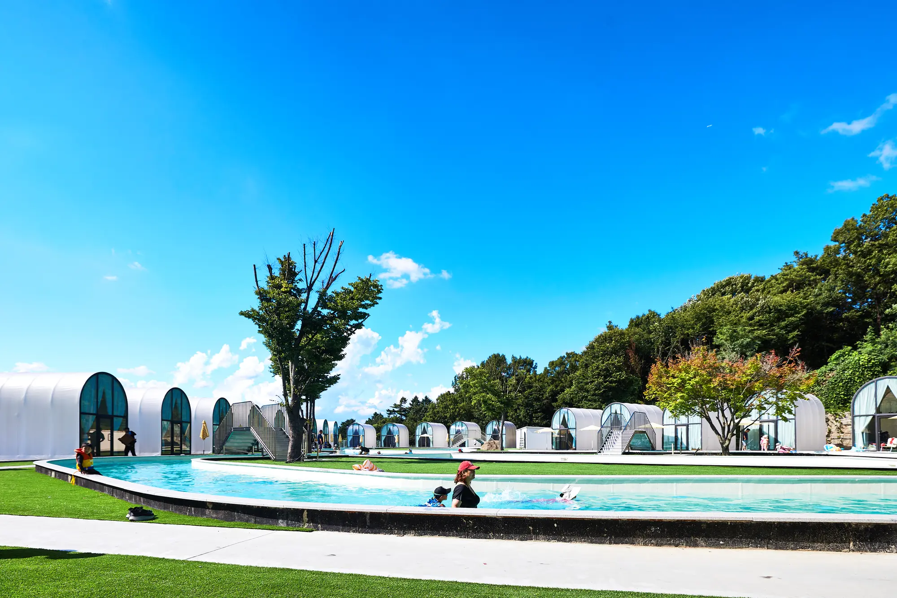
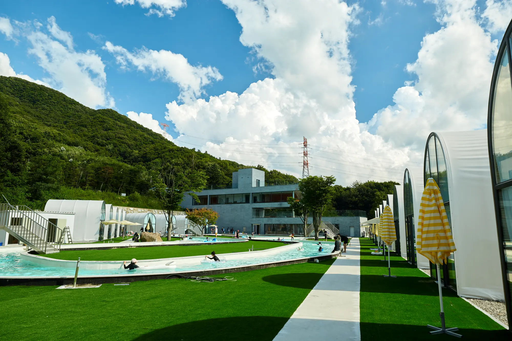
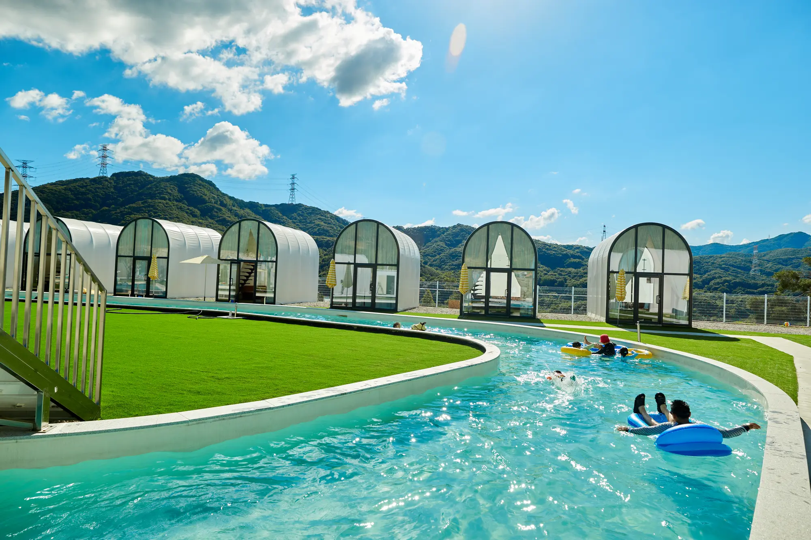
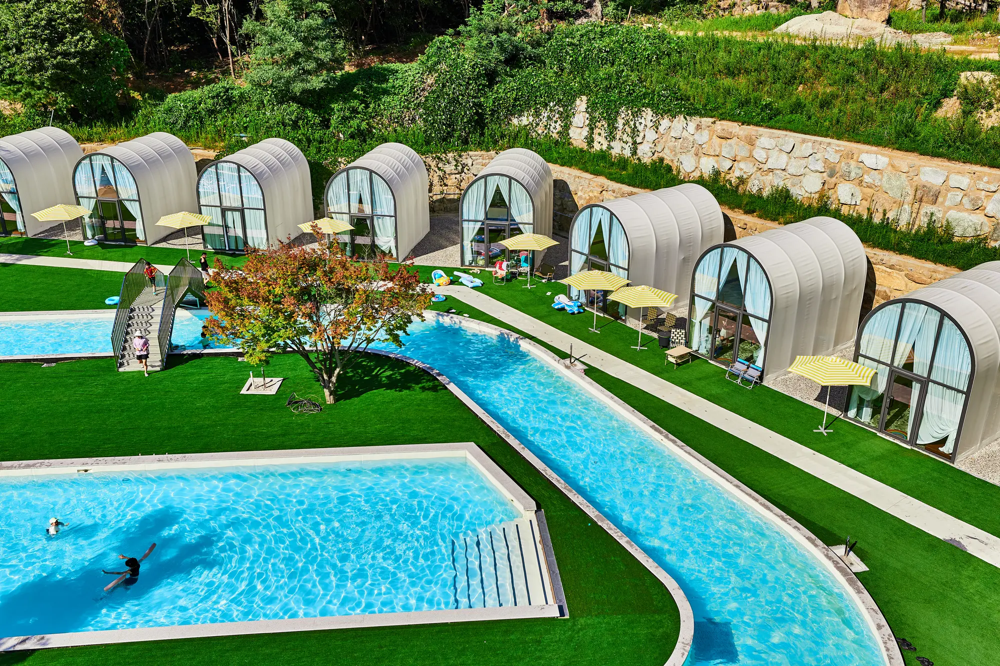

용인 리림 공간 안내
수영장과 유수풀, 개별 쉘터의 배치와 실제 공간 모습을 한눈에 확인해 보세요.
RE:LIM SPACE MAP
리림의 공간을
한눈에 살펴보세요.
수영장과 유수풀을 중심으로 1–23번 개별 쉘터가 배치되어 있습니다. 모든 쉘터는 동일한 형태로 운영되며, 예약 확정 후 안내받은 번호의 위치를 지도에서 확인해 주세요.

SPACE INFORMATION
번호가 달라도,
쉘터의 구성은 같습니다.
각 팀은 독립된 개별 쉘터를 이용하며, 물놀이와 바비큐, 휴식을 한 공간에서 편안하게 즐길 수 있습니다. 지도는 예약한 쉘터의 위치와 주요 시설의 동선을 확인하는 용도로 이용해 주세요.
- 01
- 개별 쉘터1–23번 동일한 기본 구조
- 02
- 수영장·유수풀쉘터와 자연스럽게 이어지는 물놀이 공간
- 03
- 공용 시설현장 안내에 따라 안전하게 이용
ACTUAL SPACE
실제 공간에서 만나는
리림의 풍경
쉘터와 수영장, 유수풀이 하나의 동선으로 연결되어 있습니다. 계절과 날씨, 현장 운영 상황에 따라 공간의 모습은 달라질 수 있습니다.



